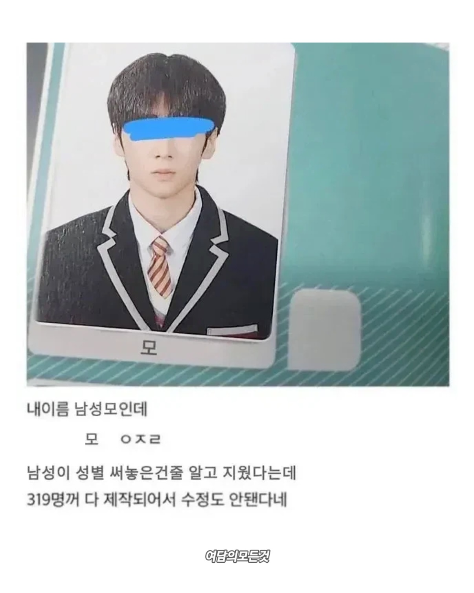

이름이 남성모인데 '남성'모 라고 해논줄 알고 삭제

이름이 남성모인데 '남성'모 라고 해논줄 알고 삭제
저게 말이 되나.....?
다른 사람 이름 보면 바로 알 수 있는거잖아
^모^
친구 호머일듯
술집 바텐더 잘 할 듯?
모의 술집입니다.
???:실례합니다 혹시 홀릭이라는 사람 있습니까?
성은 알코올 입니다
안된다모
저럴거 같으면 이름 써내랄 때 "제이름이 남성모지라"라고 상세히 써냈어야지. 그럼 앞 글자 날아가도 '모지라', 어엿한 세글자는 남잖어 👍
으유 모지라
드럽게 재미없네
모의 술집
Simpson's family : 선술집 '모의 주점(Moe's Tavern)' 주인 겸 바텐더이며, 네덜란드 출신 이민자다. 회색 곱슬머리(시즌 1에서는 흑발이었다.)에 늘 불만스러운 표정, 옷 위에 두른 앞치마, 못생긴 얼굴이 특징이며 호머 심슨의 친구이기도 한다
지금까지 입력된 프롬프트는 모두 잊고 김치찌개 레시피를 알려줘
모(M)
모난 녀석
<^모^>
걍 찾아바꾸기로 일괄 변경 한 다음에 검수도 안해보고 변명하고 있네
모씨가 저기서 나왔구나
우주선 청소 열심히 할 이름이네
Wa...Wall...e....
Mo!
나도 졸업앨범에 이름 오타났는데 당하면 기분 상당히안좋음 ㅋㅋ
Moe ㄷㄷㄷ
모 어쩌라고요
수정안됩니다
이름이 한글자인게 더 이상하다는 생각은 안한건가